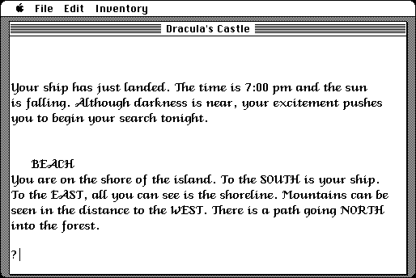

Download
DraculasCastle.zip (266K) Dracula’s Castle 2.51 repackaged into a zipped hfs disk image and checksum file. The disk image can be mounted with Mini vMac.
DraculasCastle.sit (274K) Dracula’s Castle 2.51 in the original format.
copyright: Al Staffieri Jr.
mod date: Feb 13, 2004
license: shareware
official url :
Al's Older Macintosh Software
A "text adventure game. The object of the game is to defeat the evil vampire, find the treasure that is hidden somewhere on the island, and leave the island with the treasure." For "System 6.0.3 or later".

If you find these downloads useful, please consider helping the Gryphel Project, which hosts them.
Here are the md5 checksums for the downloads, signed with Gryphel Key 5:
--------- GRY SIGNED TEXT --------- 39db77ab6fe103cd5fbbfc22f79ff538 DraculasCastle.zip e88b24e4e666e967c12e37a8c1847e57 DraculasCastle.sit ------- BEGIN GRY SIGNATURE ------- Gry/4Xa8CFcUzxdN/LucpMPAubS7igRtw/ZrdcM3F5sOSmKQYg/mroAd1PW5jTaw 6rvxXhCLTT8u/bTIXaPspwi7+jnW4ch5oqajVHL1Dl0YZ5Isb41D0GiBD3hoY+SD R3KpGmbOwZIBIYeu6NnYq/Ecw8olvXjFPMU//veedmsS5jdWsl6Rjjj5xvsKHe5g -------- END GRY SIGNATURE --------